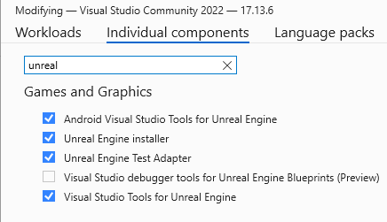

Troubleshooting
This page contains answers to common questions or issues that may occur as you try to develop HoloOcean.
I can’t open HoloOcean in Unreal Engine on Windows
Often, the issue is with the Visual Studio setup. Open the Visual Studio Installer and modify your Visual Studio setup. Please verify that you have all of the Unreal Engine requirements downloaded.
Try clicking on the holodeck.uproject file again and saying “yes” to rebuild if prompted.
If there is still an error, you will need to manually build the project in Visual Studio. Right click on the holodeck.uproject file and select “Generate Visual Studio project files.”
Please see Compiling if you have issues opening the project in Visual Studio.
There are some errors in the Unreal Engine source code that also could be preventing issues. These files can be changed without affecting HoloOcean.
None of my changes to code are showing up when I run HoloOcean
If you changed any c++ files, you must compile HoloOcean either from from the Unreal Engine editor, or from Visual Studio. Please see Compiling.
If you changed any python files, you must go to holoocean/client and run pip install .
I added new objects to my level but they don’t show up on sonar
First, make sure the proper collision settings are enabled. Please see Note on Collision Settings for Objects and Sonar.
Also make sure to delete any octrees previously made for your level. Octrees need to be regenerated whenever new objects are added to an environment.